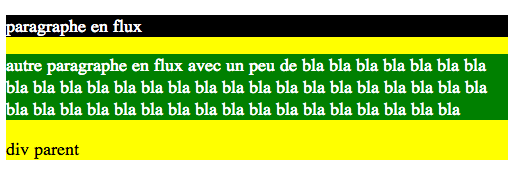

Objectifs
Lors des prochaines semaines vous allez vous initier au Concrètement après ces séances :
- Vous saurez créer un site web statique de zéro (avec tout de même l'aide d'un web designer)
- Vous aurez le niveau pour reprendre un template (libre de droits) et le changer
- De bonnes notions sur ce qu'est un site de qualité
- Compris les mécaniques de base d'un CMS
- Vous serez prêts pour les cours de client riche : JS, Ajax, DOM, service workers, Vue.js
Voici quelques liens intéressants pour compléter ce cours (évitez openclassroom):
- Tout un ensemble de cheat sheet intéressants
- W3school pour de la documentation et des exemples très claires
- De bons tutoriels sur le site d'alsacréation pour aller plus loin
- Des cours et des exercices supplémentaires sur le site de la Khan academy
Les bases du HTML
Cette partie se fait en interaction avec l'enseignant. Pensez à prendre des notes.
Ce que vous devez avoir retenu de ces interactions :
- L'anatomie d'une page web : doctype/html/head/body
- A quoi servent les méta données : title, charset, lang (balise html), description,
- Ce à quoi correspondent les balises : p,li, h1, img, span, a, div
- La notion de classe et d'ID
- Les outils indispensables utiles au développement : connaitre son navigateur (accéder et utiliser aux fonctionnalités de base de votre debugger), prendre en main son IDE, savoir sur quel site aller chercher de la documentation, W3C validator, .
- Avoir acquis du vocabulaire : balise, propriété, valeur, ...
- Avoir compris la différence entre un client et un serveur (web) et comment fait une page web pour s'afficher
- Savoir s'y retrouver rapidement à une cheat sheet html
Les bases du CSS
Cette partie se fait en interaction avec l'enseignant. Pensez à prendre des notes.
Ce que vous devez avoir retenu de ces interactions :
- Comment intégrer un fichier css dans son projet
- La logique des sélecteurs : , . # espace > + ~ :
- Debug du css
- Savoir s'y retrouver rapidement dans une cheat sheet css
- La notion de priorités des règles css
Pour rappel, les spécifications CSS proposent une classification des sélecteurs selon un barème de poids sous forme de notation à quatre chiffres :
- Poids a : règle CSS déclarée à l’aide de l’attribut HTML style= au sein de l'élément
- Poids b : sélecteur d’identifiant
- Poids c : sélecteur de classe, d’attribut ([]) ou de pseudo-classes ( :hover, :focus, :firstchild)
- Poids d : sélecteurs d'élément (p, div, a, ...) ou de pseudo-élément ( :first-letter, :before, :after, ...)
- poids nul : parenté ( > ) ou adjacence (+)
Par exemple (trouvés ici ) :
#content nav li a.on:hover {
color: red;
}
1 ID (#content), 2 classe+pseudo-classe (.on :hover), 3 éléments (nav li a) => 123
Il surpassera ce sélecteur:
nav.verte li.gras a.on:hover {
color: green;
}
0 ID, 4 classe+pseudo-classe (.on :hover .verte .gras), 3 éléments (nav li a) => 43
mais pas celui-ci:
#content #nav a {
color: red;
}
2 ID, 0 classe+pseudo-classe, 1 éléments (a) => 201
Exercices niveau 1
Question 1
Ecrivez (sans toucher au html) le css permettant de reproduire le rendu suivant :
- Le tire principal est en vert
- les images ont toutes la même taille (100px)
- Les images de légumes ont un cadre vert et celles de légumes ont un cadre jaune
- Le paragraphe se transforme (comme pour le kiwi) au survol de la souris
- Pensez à optimiser vos sélecteurs !

Question 2
Ecrivez (sans toucher au html) le css permettant de reproduire le rendu suivant :
- Toutes les images disparaissent, toutes les adresses disparaissent
- Les noms des universités restent
- Pensez à optimiser vos sélecteurs !

Question 3
Ecrivez (sans toucher au html) le css permettant de reproduire le rendu suivant :
- Les deux derniers items sont en rouge

Question 4
Essayez de comprendre pourquoi le texte s'affiche en orange
Question 5
Ecrivez deux exemples de html correspondant au sélecteur css écrit dans style.css :
Question 6
Ecrivez deux exemples de html correspondant au sélecteur css écrit dans style.css :
Question 7
Ecrivez un exemple de html correspondant au sélecteur css écrit dans style.css :
Le positionnement : les règles de base
Une cheat sheet sur les règles de base du positionnement.

Cette section de cours a pour objectif de consolider et d'élargir vos connaissances des différents schémas de positionnement classiques utilisés : le positionnement en flux, le positionnement absolu, fixé ou relatif et le positionnement flottant. Nous verrons ensuite le positionnement via flex-box et enfin le positionnement avec bootstrap.
Lorsque naît le web en 1994, sa portée est tout d'abord extrêmement limitée et essentiellement destinée à un monde d'étudiants ou de scientifiques. Adaptées à des documents de type principalement textuel, où les éléments sont disposés de façon linéaire, empilés les uns sur les autres (titres, paragraphes, listes), les CSS sont dépassés dès leur apparition par un Web en pleine ébullition : gigantesque marché naissant, internet ne pouvait se réduire à de simples pages textuelles et frustrer ainsi tous les graphistes en quête de l'aspect le plus vendeur pour leur vitrine. A l'heure actuelle, le positionnement se base principalement sur l'utilisation de framework tels que fondation ou bootstrap. Si désormais il est rare de gérer manuellement le positionnement de blocs dans un site web, il reste important de bien comprendre les bases du positionnement. Cette partie du cours est inspirée de "CSS avancées vers le html5 et CSS3, R Goetter" éditions Eyrolles
Modèle de boîte
Selon les spécifications du W3C, tout élément structuré par une balise HTML (ou plusieurs) se représente sous forme d'une boîte rectangulaire définie par diverses composantes que sont:
- la zone de son contenu, représentée par une largeur et une hauteur : en CSS, il s'agit des propriétés width et height
- Un espace réservé à la bordure de la boîte (propriété border)
- Une marge interne à la boîte (padding), se situant entre la zone de contenu et la bordure
Une dernière composante représente la marge externe (margin) et se situe hors de la boîte, au-delà de l'espace alloué à la bordure. Elle affecte le positionnement de l'élément puisqu'elle pousse sa boîte ou ses soeurs environnantes. Toutes ces composantes doivent être prises en considération : contrairement à ce que beaucoup pensent, un élément n'occupe pas uniquement l'espace déterminé par sa valeur width, mais aussi celui de ses marges internes padding et ses bordures.
Dimension des éléments
Le calcul de la largeur réelle d'un élément est souvent mal appréhendé car l'attribut width ne désigne pas la largeur entière mais uniquement celle de la partie de contenu. Prenons par exemple un paragraphe disposant des déclarations CSS suivantes :
p {
width: 100px;
padding: 10px;
margin: 5px;
border: 1px solid #000;
background-color: yellow;
}
Question 8
Quel est la largeur (totale) en pixels, de la boîte de paragraphe? N'oubliez pas de prendre l'habitude d'utiliser le debugger de votre navigateur.
Fusion de marges
Nous allons étudier un cas un peu plus complexe dans lequel des éléments (boîtes) frères ou parents on tous des définitions de marges. Il faut que vous connaissiez les règles de fusion de marge. Dans l'exemple ci-desous les deux paragraphes ont des marges (verticales) de taille différentes.
Question 9
En utilisant le debugger de votre navigateur calculez l'espace séparant ces deux blocs. Qu'en concluez-vous ?
Question 10
Regardez l'exemple ci-dessous. La fusion de marges horizontales suit elle les mêmes règles que la fusion de marges verticales ?
Rendu par défaut et flux courant
L’ordre dans lequel apparaissent les balises dans le code HTML est celui dans lequel les boîtes sont affichées et s’empilent dans le document. Ce schéma de positionnement par défaut se nomme le flux courant. La mise en place des différents éléments de la page s’organise par défaut selon le flux courant. Les règles de positionnement dans le flux courant sont relativement simples et intuitives. Chaque élément :
- est situé sur le même plan que l’autre dans le flux
- se place le plus haut possible et le plus à gauche possible au sein de son parent
- est dépendant de l’élément frère précédent : deux éléments de type block s’empilent verticalement l’un sous l’autre, deux éléments de type inline se suivent sur la même ligne s’ils en ont la place
Question 11
Complétez le CSS pour obtenir le résultat comme ci dessous. L'objectif est de bien comprendre l'impact du positionnement d'une balise bloc ou inline dans le flux.
Positionnement absolu
Un élément est positionné en absolu quand il est affublé de la déclaration position:absolute. Positionner un élément en absolu le retire du flux :
- L’élément se retrouve sur un autre plan, placé au dessus du niveau du flux (un peu comme un calque sous photoshop)
- Les éléments restants se réorganisent entre eux, dans le flux sans tenir compte de l’élément positionné en absolu hors de leur plan d’affichage
Question 12
Jouez avec les différents paramètres pour bien comprendre le repositionnement dans le flux quand le bloc "info" est positionné de manière absolue;
Nous avons bien avancé sur le concept du positionnement absolu, mais il nous manque encore une donnée essentielle : qui est donc ce fameux référent mentionné partout? L'erreur classique est de croire que le référent de tout élément positionné en absolu a comme référent l'écran. En fait, un élément positionné en absolu se place par rapport à son premier ancêtre positionné. Le principe est le suivant : le bloc positionné en absolu remonte toute sa branche au sein de la hiérarchie dans le code HTML. Il vérifie si son parent est "positionné", c'est-à-dire s'il est muni de la propriété position à laquelle est associée une valeur. Si tel n'est pas le cas, il remonte d'une génération et ainsi de suite jusqu'à trouver un ancêtre positionné (en dernier recours la balise html sera son référent). Nous comprenons donc qu'il devient aisé d'indiquer une référence à un bloc absolu : il suffit d'appliquer une déclaration position: absolute, position: fixed ou position: relative à cet élément de référence. Regardez les 2 images suivantes :

Question 13
L'objectif ici est de bien comprendre comment une balise devient référente dans le placement absolu. Sans JAMAIS toucher à la ligne : top : 10px; left :10px; Complétez le css afin de générer les deux mise en pages comme sur les photos au dessus.
Positionnement relatif
Un élément relatif se place par rapport à sa position classique dans le flux, puis est éventuellement décalé si au moins une des propriétés top,right,bottom,left est renseigné. La notion de relatif s'applique par conséquent à son placement initial dans le flux. Ici, les propriétés top,right,bottom,left servent à indiquer un décalage par rapport à la position initiale.
Question 14
Comlpétez le css permettant d'obtenir le décalage comme ci-dessous.
Positionnement flottant
Par définition, un élément flottant est ôté du flux et placé à l’extrême gauche (float: left) ou droite (float: right) de son conteneur, tout en demeurant sur sa hauteur de ligne initiale dans le flux. Dans les faits, le positionnement flottant s’avère complexe à utiliser car si l’élément est extrait du flux courant, il ne l’est que partiellement : les éléments précédant le bloc flottant ne sont pas affectés ; cependant, tous les éléments suivants se réorganisent dans le flux comme dans le cas du positionnement absolu, sauf ... leur contenu qui, lui, s’écoule autour du flottant en épousant sa forme. Il est par conséquent nécessaire d’être très attentif au modèle de boite des éléments suivant le flottant : seule la composante de contenu de la boite s’écoule autour de l’élément flottant qui la précède. En revanche, la boite elle même se repositionne dans le flux à la suite de la boite en flux précédent. Vous suivez toujours ?
Question 14
Complétez le code suivant afin de générer les 3 cas de figure ci-dessous :

A l’instar du positionnement absolu, un élément flottant adopte par défaut la largeur qu’occupe son contenu. Si celui-ci est dense, elle est susceptible d’occuper toute la largeur du parent, c’est pourquoi il est souvent nécessaire de fixer une largeur au flottant via la propriété width ou max-width. Lorsqu’un élément flottant est poussé dans la même direction qu’un autre élément flottant, il demeure sur le même plan et se cale à ses côtés (très utilisé pour les menus). Attention, gardez à l’esprit que le flottement est un positionnement hors flux et qu’il n’a plus de prise sur les blocs alentours en flux, à l’exception des contenus qui vont "épouser" les flottants. Cela signifie qu’un parent ne contenant que des flottants n’occupera physiquement aucune surface à l’écran, ou encore que les objets flottants vont dépasser de leur conteneur.
Question 15
Créez le CSS permettant (comme sur l’image ci-dessous) d’illustrer le cas de figure pour lequel le parent div vide de contenu (exceptés les paragraphes) n’occupera pas physiquement de place sur la page.
La propriété clear est une sorte de passerelle entre deux plans du document : celui du flux courant et celui des flottants. elle interdit à un élément de se placer sur la même ligne qu’un bloc flottant et le force par conséquent à se caler directement en dessous de celui-ci. Elle autorise par ailleurs un nettoyage des flottants exclusivement à gauche (clear: left), à droite (clear:right) ou les deux simultanément (clear:both).
Question 16
Créez le code HTML et CSS permettant d’obtenir la même disposition que sur l’image ci-dessous.

Question 17
Créez le code HTML et CSS permettant d’obtenir la même disposition que sur les trois images ci-dessous.
Exercices niveau 2
Question 18
Regardez la vidéo suivante puis écrivez le css permettant de reproduire le même comportement.
Quelques indices :
- toutes les images ont la même taille
- il faut faire en sorte que les paragraphes se suivent horizontalement (et plus les uns sous les autres)
- au passage de la souris on fait apparaitre une bordure
- chaque texte peut être placé en position relative ou absolue (comme vous préférez)
- par défaut ce texte n'est pas visible (cherchez l'attribut css permettant de faire cela)
- quand la souris est positionnée sur un paragraphe (et pas une image) le texte est maintenant visible
- dans mon exemple le bandeau est de couleur rgba(50,50,50,0.6); le texte est blanc et gras, la taille de la fonte est de 20px
Une solution possible est disponible ici
Question 19
Dans cet exercice vous allez créer un menu horizontal contenant un sous menu.
Partez du code suivant :
Complétez le HTML permettant d'obtenir le rendu suivant :
En suivant les indications ci-dessous, complétez le css permettant d'obtenir le rendu suivant :
// Trouver le sélecteur de : ul principal de la div menu
????{
margin:0;
padding:0;
????; // enelever les points mis par défaut devant chaque item
????; //le texte doit être centré
}
//Trouver le sélecteur de : tous les li dans la div menu
????{
????;//modifier le flux afin que tout soit aligné
margin:auto;
padding:0;
????; //le fond de chaque zone est vert;
}
//Trouver le sélecteur de : tous les liens dans un li contenu dans une div menu
????{
????;// par défaut un lien est inline, on ne peut pas lui donner de taille. Quelle est sa propriété d’affichage permettant de lui donner une taille ?
width:100px;
color:white;
????; // les liens ne doivent plus être soulignés
padding:5px;
}
//Trouver le sélecteur de : tous les liens survoles à la souris dans un li contenu dans une div menu
????{
color:#FFD700;
}
A ce stade, le sous menu (le ul contenant les 3 sous-items) est constamment affiché (alors qu'on le souhaite déroulant). La première étape consiste à faire disparaitre, par défaut, ce sous menu. Pour cela il faut initialiser à une valeur précise de l'attribut display. Trouver le code css permettant de parvenir à l'affichage désiré (un sélecteur et une ligne de css à écrire).
Pour afficher le sous menu au passage de la souris, il faut utiliser la propriété hoover. Complétez le code suivant afin de parvenir à l'affichage désiré.
#menu ???? { display : ????; }
Le sous-menu s'affiche de manière horizontale, alors que l'on souhaite un affichage vertical. Pour cela, il faut utiliser la propriété float. Complétez le code suivant afin de parvenir à l'affichage désiré (celui de la vidéo).
Une solution possible est disponible ici
#menu ????{ float : ????; }
Question 19
Si l'on souhaite imprimer la page Web que vous venez de créer, votre navigateur imprimera par défaut l'ensemble de votre page. Hors, on peut souhaiter ne pas imprimer les menus, on peut également souhaiter changer la couleur du texte, l'orientation de la page... Le bon réflexe est de créer un second fichier CSS (print.css) et de faire le lien vers ce fichier depuis la page web que vous avez créée.<link rel="stylesheet" type="text/css" href="style.css" title="CSS principal" /> <link rel="stylesheet" type="text/css" media="print" href="print.css" />
Récupérez le code source d'un très joli site depuis votre invité de commande : wget -r http://www.villardieres.com
Par défaut (sur mon navigateur) cela donne l'impression suivante :
Créez le css du print permettant d'obtenir le résultat suivant : seuls le titre et le texte restent. Le texte doit être grossi pour qu'il soit bien lisible à l'impression
Une solution est disponible ici
Question 20
Le Lien ci-dessous vous amène à un code utilisant uniquement du css/html pour réaliser de jolies animations. Etudiez ce code. Trois étudiants passeront au tableau pour commenter le code qui leur a été attribué (tout le monde n'a pas le même code).
Le positionnement : flex-box
Plusieurs passages de ce cours sur flex-box sont extraits des (très bons sites) : Alsacréation, mozilla, la casccade. J'ai extrait de ces tutos les définitions des propriétés les plus utiles. Je vous encourage à faire entièrement ces tutos.
Nous venons de voir le modèle de boîte classique en CSS et ses dispositions de type “block” ou “inline”, sachez que Flexbox CSS3 a été conçu pour étendre ce périmètre en introduisant un nouveau modèle de boîte distinct, que l’on appellera “le Modèle de boîte flexible”. Au sein de ce schéma, on ne raisonne plus en “block” ou “inline”, ni même en float ou autres types de boîtes “classiques” CSS, mais en “Modèle de boîte flexible”, dont les quatre possibilités principales sont :
- Distribution des éléments horizontale ou verticale, avec passage à la ligne autorisé ou non,
- Alignements et centrages horizontaux et verticaux, justifiés, répartis,
- Réorganisation des éléments indépendamment de l’ordre du flux (DOM),
- Gestion des espaces disponibles (fluidité).
FlexBox (pour Flexible Box) est un mode de mise en page prévoyant une disposition des éléments d’une page de telle sorte que ces éléments possèdent un comportement prévisible lorsqu’ils doivent s’accommoder de différentes tailles d’écrans/appareils. Les points forts :
- Distribution des éléments horizontale ou verticale, avec passage à la ligne autorisé ou non,
- Alignements et centrages horizontaux et verticaux, justifiés, répartis,
- Réorganisation des éléments indépendamment de l’ordre du flux (DOM),
- Gestion des espaces disponibles (fluidité).
Un peu de vocabulaire :
1- Conteneur Flex (Flex Container)
L’élément parent dans lequel chaque élément flex sera contenu. Un conteneur flex est défini lorsque la propriété display possède la valeur flex ou inline-flex.
2- Élément flex (Flex item)
Chaque enfant d’un conteneur flex devient un élément flex. Le texte directement contenu dans un conteneur flex est englobé dans un élément flex anonyme.
3- Axes
Toute boîte suit deux axes : L’axe principal (main axis) sur lequel les éléments flex se suivent. L’axe secondaire (cross axis) est perpendiculaire à l’axe principal.
- La propriété flex-direction établit l’axe principal.
- La propriété justify-content définit comment les éléments flex sont positionnés le long de l’axe principal sur la ligne courante.
- La propriété align-items définit comment les éléments flex sont positionnés le long de l’axe secondaire sur la ligne courante.
- La propriété align-self définit comment un seul élément flex est aligné sur l’axe secondaire et surcharge le comportement par défaut défini par align-items.
4- Directions
Le début/fin du côté principal et du côté secondaire du conteneur flex décrit l’origine et la fin du flux d’éléments flex. Ils suivent l’axe principal et secondaire du conteneur flex dans le sens établi par writing-mode (gauche-vers-droite, droite-vers-gauche, etc.).
- La propriété order ordonne les éléments d’un groupe et détermine quel élément va apparaitre en premier.
- La propriété flex-flow raccourcis les propriétés flex-direction et flex-wrap pour positionner les éléments flex.
5- Lignes (Lines)
Les éléments flex peuvent être positionnés soit sur une seule ligne, soit sur plusieurs lignes via la propriété flex-wrap, qui contrôle la direction de l’axe secondaire et la direction dans chaque nouvelle lignes rajoutées. Dimensions Les termes désignant la hauteur et la largeur des éléments flex sont la taille principale (main size) et la taille secondaire (cross size), qui suivent respectivement l’axe principal et l’axe secondaire du conteneur flex.
- Les propriétés min-height et min-width ont une valeur initiale de auto.
- La propriété flex est un raccourci des propriétés flex-grow, flex-shrink et flex-basis pour établir la flexibilité des éléments flexibles.
Testez par vous même
flex-direction
La distribution, c’est à dire le sens d’affichage horizontal ou vertical des éléments "flex-items" est définie par la propriété flex-direction dont les valeurs peuvent être :
- row (distribution horizontale, valeur par défaut)
- row-reverse (distribution horizontale inversée)
- column (distribution verticale)
- column-reverse (distribution verticale inversée)
flex-wrap
La propriété flex-wrap définit si le contenu sera distribué sur une seule ligne (ou colonne selon l’axe principal) ou sur plusieurs lignes. En clair, si les "flex-items" ont le droit de passer à la ligne ou non. Les valeurs de flex-wrap sont :
- nowrap (les éléments ne passent pas à la ligne, valeur par défaut)
- wrap (les éléments passent à la ligne dans le sens de lecture)
- wrap-reverse (les éléments passent à la ligne dans le sens inverse)
justify-content et align-items
Flexbox propose de gérer très finement les alignements et centrages, en différenciant les deux axes d’affichage de cette manière :
- L’alignement dans l’axe principal est traité via la propriété justify-content
- L’alignement dans l’axe secondaire est géré avec align-items
Axe principal : justify-content
Les alignements dans l’axe de lecture principal sont définis à l’aide de la propriété justify-content, dont les valeurs possibles sont :
- flex-start (éléments positionnés au début du sens de lecture, valeur par défaut)
- flex-end (éléments positionnés à la fin)
- center (position centrale)
- space-between (répartition “justifiée”)
- space-around (variante de répartition “justifiée”)
Dans l’axe secondaire (axe perpendiculaire à l'axe principal), les alignements sont régis via la propriété align-items, dont les valeurs sont :
- flex-start (au début)
- flex-end (à la fin)
- center (au centre)
- baseline (généralement identique à flex-start)
- stretch (étirés dans l’espace disponible, valeur par défaut)
Un guide très bien fait sur flex-box est disponible ici.
Exercices
Le site https://flexboxfroggy.com propose quelques exercices très bien faits pour travailler le flex. Faisons en quelques-uns ensemble puis finissez à la maison.
6- Taille minimale d’un élément
La propriété flex-basis détermine la base de flexibilité utilisée comme taille initiale principale pour un élément flexible. Testez ce code et faites varier flex-basis de main #div : auto ou 100px ou un pourcentage. Observez la largeur prise par l'ensemble des boites par rapport à la div#main qui fait 300 pixels de large.
7- Taille d’un élément relativement à celle des ses voisins
La propriété flex-grow définit le facteur d'expansion d'un élément flexible. Elle indique la quantité d'espace que l'élément devrait consommer dans un conteneur flexible relativement à la taille des autres éléments du même conteneur. Si tous les éléments voisins possèdent le même facteur d'expansion, ils recevront tous la même part d'espace. Faites varier les valeurs de flex-grow et observez comment se répartissent les écarts.Toujours avec ce code, entrez un long texte dans le permier item. vous devriez observer que les proportions définies avec flex-grow ne sont plus respectées.
Le calcul précis permettant de comprendre comment le rendu est fait est expliqué ici . C'est un peu technique. Surtout observez qu'il est recommandé d'utiliser flex-grow avec flex-basis
8- Réduire la taille d’un élément relativement à celle des ses voisins
La propriété flex-shrink permet de définir comment un item peut rétrécir en fonction des éléments flexibles contenus dans le même conteneur.
La valeur par défaut est 1 (ce qui signifie que l'item ne rétrécit pas par défaut), et le facteur de rétrécissement est multiplié par le flex basis lorsqu'il distribue l'espace négatif aux items flex.Qu'est-ce que l'espace négatif ? C'est l'espace qui excède la dimension du container principal. Avec flex-shrink, on répartit cet espace négatif, en multipliant pour chaque item sa taille initiale par le ratio de flex-shrink. Bref, à l'inverse de flex-grow, qui sert à répartir de l'espace positif entre les items en permettant leur agrandissement selon certaines proportions, flex-shrink sert à répondre à la question : “comment rétrécir de manière ordonnée mes items pour tout faire rentrer dans le container ? (déifinition issue de https://la-cascade.io/flex-shrink/
Pour que pour que flex-shrink ait un effet visible, il faut que la somme des tailles par défaut des flex-items dépasse du conteneur.
Dans le code ci-desous testez les combinaisons suivantes pour les valeurs de flex-shrink et retrouvez à quelle image cette combinaison correspond : (0,0), (1,0), (1,1), (1,4).
Je vous encourage à regarder ce site. Il contient un bon nombre d'animations qui aident à comprendre le comportement du positionnement par flex en fonction de la taille de la page.
9- Tout en 1
La propriété flex est une propriété raccourcie qui définit la capacité d'un élément flexible à modifier ses dimensions afin de remplir l'espace disponible de son conteneur. Les éléments flexibles peuvent être étirés ou réduits pour utiliser un espace proportionnel à leur coefficient de grossissement ou de rétrécissement afin de ne pas dépasser d'un conteneur. Les propriétés détaillées correspondantes à cette propriété raccourcie sont flex-grow, flex-shrink et flex-basis
Dans le code ci-dessous je vous au préparé 7 cas de figure différents. Etudiez chacun d'eux.
10 Création de layout avec Flex
Regardons ensemble l'exemple ci-desous :
Codez maintenant ce layout en utlisant Flex

sachant que le html est
<body>
<nav class="outer-col-1">Nav</nav>
<div class="outer-col-2">
<header>Header</header>
<div class="inner-row">
<div class="inner-col">
<article>Article</article>
<footer>Footer</footer>
</div>
<aside>Aside</aside>
</div>
</div>
</body>
Une solution est disponible ici.
Le positionnement : bootstrap
La vesion 4 de bootstrap est basée sur FlexBox (la version 3 utilisait le flux). Bootstrap aide à positionner les éléments sur une page. La grille de Bootstrap comporte généralement 12 colonnes sur lesquelles on peut poser les éléments. Bootstrap définit la notion de containers, row et col. Source ayant servies à écrire le contenu de cette section 1,2 :
Il est impossible ici de passer en revue l'ensemble des fonctionnalités de la V4 de bootstrap. Je vous propose ici de voir l'essentiel.
Les container
Un conteneur fixe container est un conteneur à largeur fixe. Lorsque vous redimensionnez votre navigateur la taille est prédéfinie. Cela donne l'impression de passer instantanément d'une taille à une autre.
Un conteneur fixe container-fuild est un conteneur qui prend constamment toute la largeur de la page.
Testez le code ci-après en faisant varier la largeur de la page.
Le système de grille
Le systèmes de grille permet de créer des mises en page avancées à l'aide de row et de col. Le système de grille Bootstrap peut avoir jusqu'à 12 col, et vous pouvez spécifier comment ces col s'adaptent à différentes tailles de fenêtres.
Après voir défini un container vous pouvez ajouter autant de row que vous le souhaitez. Les row contiennent une ou plusieurs col (somme égale à 12) dans lesquels on retrouve le contenu. Seules les row peuvent être des enfants immédiats des lignes.
Le tableau suivant montre comment différentes options de grille fonctionnent avec différentes tailles de fenêtres.
| Extra small <576px | Small ≥576px | Medium ≥768px | Large ≥992px | Extra large ≥1200px | |
|---|---|---|---|---|---|
| Comportement de la grille | Systématiquement horizontal | Replié au début, horizontal au-dessus des points de rupture indiqués sur la ligne du dessus | |||
| Max container width | None (auto) | 540px | 720px | 960px | 1140px |
| Préfixe de la classe | .col- |
.col-sm- |
.col-md- |
.col-lg- |
.col-xl- |
Étudiez l'exemple ci-dessous. Observez particulièrement le comportement de la cinquième ligne en fonction de la taille de la fenêtre.
Codez la page permettant d'obtenir le résultat suivant :
Une solution est disponible ici.
Alignement horizontal et vertical
Dans cette version de Bootsrap, plusieurs mécaniques utilisent directement flex. C'est le cas de l'alignement. Dans l'exemple ci-dessous, chaque row à son attribut min-height définit à une taille prédéfinie. Comme pour Flex il est possible de spécifier comment s’alignent les boites. Dans cet exemple vous observerez qu'il n'y a pas de chiffre associé à chaque classe de colonne < div class="col">. C'est ce qu'on appelle de "l'auto-layout columns". Bootstrap divise simplement l'espace disponible en partie égales. Plus d'informations ici.
Ré-ordonner les boites.
Comme pour flex, il est possible de réordonner les boites en utilisant l'attribut order-*.
Le Décalage de colonnes
Afin de laisser des espaces vides dans les row, il est possible de décaler les colonnes dans grille. Pour cela il faut utiliser l'attribut .offset-md-* qui indique, selon la largeur de l'écran (ici md), de combien de colonnes il faut se décaler avant d'intégrer le nouveau contenu.
Les composants bootstrap
Dans cette version 4, bootstrap augmente encore le nombre de composants "prêts à servir" : boutons, carrousel, formulaires, fenêtres pop, progess bar, ... Ils sont listés ici
Une extrêmement utile est le composant navbar. Ce composant intègre (entre autre) les classes suivantes permettant de construire "facilement" une barre ne navigation standard. Étudions ensemble le barre de navigation suivante :
Exercice niveau 3
Réalisez l'intégration de la page ci-dessous.
Toutes les ressources nécessaire sont présentes sur le site du département
Pour réaliser ce site il va falloir lire un peu de documentation. Quelques liens intéressants pouvant vous aider à bien comprendre le code.
- la classe jumbotron
- Unités de mesure lien 1, lien 2
- la gestion des couleurs
- les boutons
- la gestion simplifiée des espacements
Exercice d'intégration
Dans les grandes lignes, un projet web suit les étapes suivantes :
- Rédaction du cahier des charges
- Charte graphique - Web Design
- Mise en pré production : création technique du site et des fonctionnalités, intégration des graphiques et textes ...
- pré-optimisation SEO
- Formation à l’utilisation de l’administration ( cas d’un site dynamique ) et plus globalement transfert de compétence du prestataire au client
- Mise en ligne officielle du site internet
- Référencement
- Suivi, assistance
Vous allez devoir réaliser la page d’accueil du site Hexaconf. Ce site a pour objectif de référencer les conférences françaises parlant du numérique. Voici un extrait du cahier des charges.
Chaque année en France, un grand nombre de conférences sont organisées afin de mettre en avant le secteur du web et plus généralement celui du numérique. Ces conférences ont chacune leur spécificités. Le site a pour ambition de présenter les conférences les plus intéressantes et d’en permettre une présentation pertinente. Objectifs opérationnels : La partie vitrine du site web doit permettre aux internautes en général, et plus particulièrement à ceux ayant un intérêt envers le numérique, d’accéder à une information pertinente sur les contenus et objectifs de la formation. Le site devra donc donner accès à un contenu riche sur les conférences se tenant en France. Il doit permettre de fournir des outils simples et efficaces permettant de rechercher des conférences selon divers critères. Ce site se veut également communautaire. Un internaute doit pouvoir proposer une conférence qui, une fois modérée, fera parti du site. La mise en place et le développement du site web visera ainsi à atteindre plusieurs objectifs concomitants :
- Objectif 1 : Informer Un site dynamique diffusant des informations accessibles et réutilisables Le site web doit présenter ce pour quoi il a été créé (cf. ci-dessus). Combinant stock, liens et flux d’informations, il doit permettre de produire, mettre en forme, et diffuser des informations détaillées (avec des liens vers des sites externes.) La mise à jour des contenus doit reposer sur un système simple (utilisable par des non-spécialistes) et réactif (rapidité d’exécution). Les contenus publiés doivent respecter les normes en matière d’accessibilité pour être lus par le plus grand nombre quel que soit le matériel utilisé.
- Objectif 2 : Administrer Le site contiendra une partie (accessible uniquement par authentification) permettant de saisir/ visualiser des informations. Tout comme pour la partie vitrine du site, les pages doivent respecter les standards de l’accessibilité et ergonomie permettant, à un non spécialiste d’utiliser de manière intuitive et efficaces ces services.
Le prestataire est chargé de conseiller le département et de concevoir, en collaboration avec la personne responsable du design dans l’équipe de maitrise d’ouvrage, le design d’information (arborescence du site, organisation des contenus centrée sur l’utilisateur et ses usages, écriture adaptée au web), la ligne graphique (respect de l’identité visuelle, attrait et convivialité) et l’ergonomie de navigation (simple et intuitive, réduction maximale du temps d’apprentissage requis pour se repérer et trouver l’information recherchée) qui seront appliqués au site . Ce travail de conception fera l’objet d’une charte répertoriant l’ensemble des principes retenus et illustrés par des écrans types et fonctionnels. Cette charte permettra : d’assurer une cohérence de fond et de forme à l’ensemble de l’offre de contenus et services proposée sur le site et de faciliter son intégration au moment de l’installation de la solution technique.
Pour aider le Département informatique de l’IUT a constitué le socle initial des contenus qui seront proposé au moment
de l’ouverture du site au public, le prestataire s’engage à créer et publier les pages dans la limite d’un volume de : 6 pages.
La page d’accueil permettra de fournir une information claire et ciblée sur le contenu du site. Elle devra automatiquement
mettre en avant la conférence la plus proche dans le temps et la conférence la mieux notée par les utilisateurs
du site Une page donnant accès à un descriptif des différentes conférences et de pouvoir y réaliser des recherches
selon des critères prédéfinis. A chaque conférence il faudra associer, au minimum, les informations suivantes : lieu,
date, sujets (des tags parmi un ensemble de tags prédéfinis : technique, sociale, entrepreneuriat, ...), prix, âge de la
conférence, taille de la conférence, si elle stream, si elle met ensuite sur internet les vidéos/slides des présentations,
langues des présentations anglais et/ou français ; liens vers comptes réseaux sociaux. Chaque conférence peut être
notée par un internaute. Il faut pouvoir laisser une note (système d’étoiles) indiquant ce qu’on a pensé de la qualité de
la conférence (idéalement après y avoir assisté). Chaque conférence proposera, aux internautes identifiés la fonction
suivre. Cette fonction permet d’être tenu au courant par mail à J-15 du début de la conférence. Une page donnant
accès à un calendrier dans lequel figure la tenue des conférences. Ce calendrier doit pouvoir être importé aux formats
classiques. Une page permettant de proposer une conférence qui sera ajoutée sur le site après modération. Proposer
une conférence nécessite d’être identifié (et donc d’avoir créé un compte) Un formulaire de contact permettant de
s’inscrire au site. Une page positionnant toutes les conférences sur une carte de France et mettant graphiquement la
conférence la plus proche géographiquement de l’internaute.
Les (re)sources sont disponibles ici
Intégration
Nous vous fournissons les fichiers créés par l’équipe de web designers. Vous disposez d’une maquette (format image) de la page d’accueil ainsi que les pictos créés pour l’occasion. L’image ci-dessous vous donne un idée globale de ce à quoi doit ressembler le site. syntaxe est similaire à chacune des valeurs.
Question 1
Proposez un découpage de cette page d’accueil.
Question 2
Réalisez l’intégration de cette page d’accueil. Vous êtes libres d’utiliser le framwork CSS que vous voulez (et même de ne pas en utiliser).
HTML/CSS avancé
Création d'un formulaire
Dans le grand chantier du html5, une place d’honneur a été réservée aux éléments interactifs et aux formulaires. Plutôt rustiques avant, les éléments de saisie de la dernière génération se voient dotés de nouveaux types de champs, de nouvelles fonctions, voire de tests d’expressions régulières sur leur contenu textuel. En voici quelques-uns :
- email : le champ requiert un contenu au format d’adresse électronique
- url : le champ accueille des URL
- tel : accueille des numéros de téléphone
- number : champ acceptant uniquement des caractères numériques
- color : champ prévu pour les chaînes représentant une valeur de couleur
<input type ="email" name ="email">
Même si les fonctionnalités de ces éléments demeurent encore assez timides, l’information apportée par le type offre la possibilité d’appliquer des mises en forme spécifiques. Vous pouvez par exemple agrémenter les champs d’adresse électronique avec un pictogramme caractéristique en ciblant le sélecteur d’attribut.
[type ="email"] {background:url(email.png) left center no-repeat;}
Chacun des types de champ obéit à une norme qui définit les valeurs acceptées ou rejetées. Ainsi, il est possible de vérifier quels éléments sont invalides à l’aide des sélecteurs CSS3 valid: et invalid:
input[type="email"]:valid{background:green;}
Au cas par cas, certains attributs complémentaires peuvent élargir les fonctionnalités des nouveaux éléments de formulaire. Le type number accepte par exemple les attributs min,max,step et value.
Cette ligne permet d’indiquer qu’il s’agit d’un champ de type numérique, que la valeur minimale acceptée est 0 et celle max est 10. le step à 2 indique qu’à partir de 0 seules les valeurs 0; 2; 4; 6; 8; 10 sont acceptées. La valeur par défaut est 6.<input type ="number" min="0" max="10" step ="2" value ="6">
date : Type permettant d’afficher un contrôle de date<input type ="search" results ="10" name ="recherche" placeholder ="rechercher" autofocus autocomplete ="off">
Cette ligne permet de générer une zone de champ de recherche avec un texte par défaut, le curseur placé à l’intérieur de la zone et l’interdiction de l’autocomplétion.<input type ="search" results ="10" name ="recherche" placeholder ="rechercher" autofocus autocomplete ="off">
<form > <input name ="name" type ="text" placeholder ="champs requis" required > <input type ="submit" value ="GO"> </form >
Les champs bénéficiant de cet attribut doivent nécessairement être remplis lors de la soumission du formulaire, sans quoi la validation est refusée[required]{border:1px solid orange;}
Question 1
Regardez la vidéo ci-dessous et créer le formulaire permettant de reproduire le même comportement. Le bord de couleur rouge indique que le contenu n'est pas valide. Le mot (required) doit s'ajouter automatiquement via le css (regardez la doc de :after)
Question 2
Votre formulaire fonctionne, mais est-il de qualité ? Et plus précisément respecte-t-il la norme RGAA ? Lisez cette page.
A minima, ajoutez un attribut title au bouton et, au bon endroit, des balises labels permettant de relier chaque mot du formulaire (nom, URL, ...)
Mais comment choisir les bons labels ? Vous pouvez vous inspirer des microdata. Ce sont des schémas permettant d'utiliser des labels parmi une liste prédéfinie (plusieurs thèmes possibles : cinéma, personnes, ). Lisez cet article intéressant. Dès lors que vous utilisez des labels dans un formulaire, mais surtout quand vous écrivez des données (dont le schéma a été défini) dans une page, il faut utiliser les microdata.
Question 3
La navigation est un autre aspect de la qualité d'un site web. Généralement votre formulaire est nativement navigable au clavier. PAr contre il faut faire attention que l'ensemble du site suive un ordre logique lors des appuis successifs de la touche "tabulation". Lisez rapidement cet article et celui-là. Ils vous donnera des informations sur les bases de la navigation au clavier. Pensez à faire attention à la navigation au clavier dans votre projet web.
Mise en forme d'un texte
Gérer les dépassements/césures
Dans un texte de contenu, lorsqu’un mot sans espace ni trait d’union est plus large que la dimension définie pour son parent, le comportement normal consiste à faire déborder le texte au-delà de la largeur normale du cadre, sans retour à la ligne et sans que la dimension du conteneur ne soit affectée. Il est toutefois possible de forcer la césure d’un mot long à l’aide de la propriété CSS word-wrap appliquée au parent et qui aura pour effet de couper le mot à un endroit arbitraire afin de provoquer un retour à la ligne.
Question 4
Téléchargez le code suivant.
Jouez avec les différentes options de word-wrap et observez les résultats.
Dans certains contextes particuliers, pour ne pas dénaturer la mise en page d’un document, nous sommes amenés à masquer les contenus d’un élément dimensionnés à l’aide de la règle overflow (hidden, scroll, ou auto). Les contenus qui débordent de ce bloc sont alors rognés et invisibles. Il peut être utile de laisser un indice visuel pour indiquer la présence de ce contenu masqué. C’est là qu’intervient la propriété text-overflow : associée à la valeur ellipsis, des points de suspension son ajoutés à l’endroit où le terme est rogné. Si vous modifiez le css de l’exemple précédent de la manière suivante, vous observerez l’apparition de points de suspension.
Question 5
Reprenez l'exemple précédent et testez les différentes options de text-overflow
La fonction resize est une propriété qui offre l’opportunité à l’utilisateur de redimensionner un bloc à l’aide d’un simple glisser-déposer de la souris. Son application est particulièrement salutaire au sein des éléments de textes libres d’un formulaire (balise textarea), que le visiteur peut agrandir à loisir afin de disposer de suffisamment d’espace pour insérer son contenu sans être gêné.
Question 6
Reprenez l'exemple précédent et testez les différentes options de resize.
Mettre en page correctement des blocs de texte
CSS3 offre la possibilité de présenter un texte sur plusieurs colonnes, à l’instar des journaux papier, via column et ses propriétés dérivées. Ces différentes propriétés peuvent être scindées en trois parties fonctionnelles :
- nombre et taille des colonnes :
- columns : nombre de colonnes et éventuellement la largeur de chaque colonne
- column-min-width : largeur minimale de chaque colonne
- column-width-policy : mode d’affichage des colonnes (flexible, strict ou inherith)
- ce qu’il y a entre les colonnes :
- column-gap : distance entre chaque colonne
- column-rule : couleur, style et largeur de la séparation entre colonnes
- Enfin une propriété column-span pour étendre un élément sur plusieurs colonnes
La plupart de ces propriétés sont encore à l’état de chantier. Du coup, il faut les faire précéder des habituels préfixes.
Vous pouvez essayer de créer un - Le nom de l’attribut doit ê̂tre composé d’au moins un caractère et être préfixé de la chaîne data- afin d’être valide
- Il ne doit pas contenir de caractères en majuscules
- La valeur de l’attribut personnalisé peut ê̂tre n’importe quelle chaîne de caractères
- L’une des nombreuses application de ces attributs paramétrables pourrait être l’affichage d’infobulles personnalisées.
dans un fichier html et et de lui appliquer le style suivant :
Question 7
Créez un code (en jouant sur les attributs column-gap, columns et column-rule) afin qu'il donne le même visuel que l'image.
Question 8
Créez un code HTML/CSS afin qu'il donne le même visuel que l'image.
Textes suivant des formes complexes
Vraiment parce que cette propriété est peu connue alors qu’elle permet de faire des choses superbes comme sur cette vidéo :
Voyons comment fonctionne le shape en CSS.
Cette propriété CSS permet d appliquer un contenu (texte) autour d’une forme géométrique entièrement paramétrable.
Il est possible de créer une forme prédéterminée avec la propriété shape-outside: circle(50%), ou d’utiliser la
fonction polygon pour déterminer les zones où s’appliquera le texte.
Regardez l'exemple ci-dessous et jouez un peu avec les différents paramètres.
Avec un peu de patience (et en utilisant de bons outils comme Gimp ou http://bennettfeely.com/clippy/) il est possible de mettre en page votre texte en délimitant vous même les zones de texte ou en indiquant une image masque.
Attributs personnalisés
N’avez-vous jamais été tenté d’employer un attribut créé de toutes pièces, non référencé dans les spécifications? HTML5 autorise la mise en œuvre de tels attributs personnalisés sous certaines conditions :
Question 9
Créez une balise span dans votre fichier HTML, et donnez lui un nom d'attribut personnalisé.
Complétez le css afin que le texte de l’attribut déclaré dans le span s’affiche au survol de la souris comme sur l’image ci-dessous.<span data-tooltip ="ceci est une infobulle"> survolez moi! </span>
Un peu de CSS avancé
Sélecteur d'attribut
CSS2 permet déjà de désigner un élément en ciblant son attribut ([attribut]} ou la valeur de son attribut ([attribut="valeur"]).
CSS3 permet 3 nouvelles variantes de sélecteurs d'attributs :
- [attribut="clafoutis"] caractérise un attribut dont la valeur commence par la chaîne "clafoutis"
- [attribut\$="clafoutis"] représente un attribut dont la valeur finit exactement par le suffixe "clafoutis
- [attribut*="clafoutis"] désigne un attribut dont la valeur contient au moins une fois la sous-chaine "clafoutis"
Cette méthode de sélection est particulièrement attrayante dans la mesure où l'on rencontre fréquemment des cas de figure où les éléments ne se distinguent que par leur attributs : les champs de soumission d'un formulaire ou encore les liens hypertextes menant vers une adresse sécurisée. En voici un exemple permettant de cibler les liens vers une adresse électronique:
a[href^="mailto"]{ background-image : url(e-mail.gif) left center no-repeat; padding-left : 25px; }
Cet exercice vise à concrétiser cette partie consacrée aux sélecteurs CSS3 dans le cadre d'une application du quotidien : agrémenter les liens hypertextes voués au téléchargement de fichiers pdf. Pour chaque lien (dans le fichier html) on ajoutera automatiquement un icône et une information sur la taille du fichier à l'aide des sélecteurs CSS3 (cf image du résultat final).
Complétez le html suivant afin d'afficher 3 liens vers des fichiers pdf.
<a href="document.pdf" title="Fichier 1 pdf 132Ko">Plan d'acces</a> <a href="document2.pdf" title="Fichier 2 pdf 232Ko">Emploi du temps</a> <a href="document3.pdf" title="Fichier 3 pdf 832Ko">Fichier absence</a> <a href="document4.txt" title="readme.txt 20ko"> fichier texte </a>
Pour résoudre cet exercice, il vous faudra sélectionner tous les liens de type pdf, puis utiliser les propriétés css3 after et content
Une solution est disponible ici
Savoir créer un tableau de manière optimisée
L'objectif de cet exercice est de styler un tableau de données en évitant tout élément superflu (classe, id, attribut) dans le code HTML. La vidéo ci-dessous illustre le résultat attendu.
Recopiez le code ci-dessous permettant de créer un tableau. Observez trois choses :
- la balise (très classique) th indiquant l'entête (début colonne ou ligne) qui a pour effet de mettre en gras et centrer ce texte.
- scope n'ayant pas d'influence sur le rendu visuel, mais permet d'ajouter de la sémantique pour l'aide à la lecture du tableau (certains lecteurs l'interprètent). Il permet de préciser si l'en-tête de cellule (th) doit être associé à sa ligne ou à sa colonne.
- L'utilisation de la balise caption
<table summary="Le prix des fruits sur le marche"> <caption> Prix des fruits </caption> <tr> <td></td> <th scope="col"> Origine </th> <th scope="col"> Prix (en euros)</th> </tr> <tr> <th scope="row"> Kiwi</th> <td> France </td> <td>42</td> </tr> <tr> <th scope="row"> Pasteque</th> <td> Taiwan </td> <td>1137</td> </tr> <tr> <th scope="row"> Papaye</th> <td> Roumanie </td> <td>1.3</td> </tr> <tr> <th scope="row"> Melon</th> <td> France </td> <td>12</td> </tr> <tr> <th scope="row"> Litchi</th> <td> Groenland </td> <td>15.50</td> </tr> </table>
Dans cet exercice la fonte utilisée, les couleurs et les marge exactes ne m'intéressent pas (essayez juste de faire quelque chose d’harmonieux). Ce que je veux ici c'est que vous utilisiez les sélecteurs css ou attributs suivants :
- :last-child
- nth-child(odd)
- nth-child(even)
- :empty
- border-collapse: separate; pour fusionner les bordures (sinon c'est pas joli )
Une solution est disponible ici
Un peu de responsive réalisé manuellement
Comme nous l'avons vu en cours, CSS3 améliore la gestion des styles en fonction des périphériques de sortie et de leurs particularités en introduisant la notion de requête média. il devient alors possible de limiter la portée du feuille de style CSS selon un environnement maîtrisé, par exemple uniquement les écrans dont la résolution est inférieure à 800 pixels. La requête s'effectue au sein du classique élément link.
<link rel="stylesheet" media="screen and (width:800px)" href="colors.css"/>
Elle peut également prendre place dans une règle @
@media screen and (width:800px){...}
Divers opérateur logiques combinent les requêtes : and , only et not. L'opérateur ou n'existe pas (utiliser la virgule). Voici la liste des critères requêtes généralement définis au sein d'une requête de média. Ajoutons à ces requêtes deux préfixes facultatifs min et max faisant office de "plus petit ou égal à" ou "plus grand ou égal à".
(min-color: 4)
(min-width: 800px)
(max-device-width: 800px)
(aspect ratio: 16/9)
@media print and (min-resolution: 320 dpi)
(min-device-pixel-ratio: 2) /*designe un terminal dont la densite de pixels est au moins egale a 2, comme l'iphone 4*/
Mettons en pratique les bienfaits des Media Queries au sein d'un exercice consistant à adapter une mise en page à la largeur de l'écran. L'objectif à atteindre est de varier d'un affichage en trois colonnes à un affichage sur une colonne si l'écran est réduit ou si le visiteur navigue à l'aide d'un téléphone mobile.
Créez un fichier html dans lequel : le body sera constitué d'une seule div, l'id de la div sera "main", la div sera composée de 3 paragraphes (avec 3 textes). Ecrivez les bons @media permettant d’obtenir le résultat de la vidéo ci-dessous.
CSS transformations et CSS transition
La propriété CSS3 transform permet d'appliquer des transformations en deux dimensions sur un élément : rotation, zoom, déformation et perspective.
scale : fonction de zoom
Cette fonction agrandit ou réduit les dimensions d'un élément selon un ration (< 1 diminue la taille, >1 l'agrandit). La place occupée dans le flux demeure identique (si l'élément est agrandit, ses frères ne seront pas poussés en conséquence). Selon les navigateurs (et la date où vous lisez ces lignes) il est possible que vous deviez utiliser les préfixes classiques afin que la transformation soit interprétable sur la majorité de navigateurs.
transform: scale(0.5); //réduire de moitié l'élément
rotate : rotation
Le concept de rotation via la fonction rotate dont les valeurs sont exprimées en degrés (deg) ou radians (rad). Ainsi, pour tourner les éléments de 45 degrés dans le sens des aiguilles d'une montre, nous décrirons :
transform : rotate(45deg);
skew, translate : modifier les perspectives, translation
Le panel des effets de transformation couverts par les spécifications de CSS3 ne se limite pas aux rotations et aux grossissements. Des déformations de toutes sortes et des translations sont également possibles.
skew, modifie la perspective de l'élément en tirant sur ces coins de manière à obtenir au final une forme parallélépipédique. La première valeur concerne l'axe X, la seconde l'axe Y.
transform : skew(-25deg, 10deg);
translate opère une translation de l'élément sur les axes Y et X.
transform : translate(100px,100px);
CSS transitions
Il est possible de réaliser des transitions (basiques) et donc d'animer le contenu d'une page web. Pour définir une nouvelle transition animée, il est nécessaire de préciser au minimum deux coposantes :
- la (ou les) propriété(s) à animer (transition-property)
- la durée de l'animation (transition-duration)
Les deux propriétés minimales nécessaires pour rendre fonctionnelle une transition en CSS3 sont ces deux dernières. Il existe cependant d'autres propriétés CSS spécifiques aux transitions : transition-timing-function, transition-delay et la notation raccourcie transition qui cumule tous ces aspects.
La propriété transition-property accepte 3 valeurs : all (valeur par défaut) : toutes le propriétés possibles seront animées), propriete le nom d'une propriété pouvant être animée, none : aucune propriété ne sera animée.
La propriété transition-timing-function détermine la fluidité de l'animation. Les mots-clefs sont : ease : rapide sur le début et ralenti sur la fin, linear (valeur par défaut) : vitesse constante sur toute la durée de l'animation, ease-in : lent sur le début et accélère de plus en plus, ease-out : rapide sur le début et décélère sur la fin, ease-in-out : le départ et la fin sont lents.
La notation raccourcie transition : transition-property> transition-duration transition-timing-functiontransition-delay; permet de décrire facilement et de manière concise les différentes propriétés en jeu à l'aide d'une seule propriété.
/*EXEMPLE*/
/*Creer une transition d'une seconde de toutes les propriétés d'une image lors de son survol*/
img{
transition : all 1s ease-in;
}
img:hover{
width: 400px;
transform : rotate(90deg);
}
une bonne référence expliquant tout cela
Exercices (rapides)
Complétez l'exemple à l'adresse suivante afin qu'il donne un rendu proche de celui ci-dessous.
Une solution est disponible ici
Ecrivez l'ensemble d'un code HTML/CSS afin qu'il donne un rendu proche de celui ci-dessous.
Une solution est disponible ici
La notion de qualité
Lors de cette séance de TP vous allez tout d’abord apprendre la méthodologie permettant de réaliser une critique (positive comme négative) d’un site web. Cette analyse se fera selon le modèle VPTCS de la norme OPQUAST. Lors de ce TP nous analyserons principalement les aspects techniques, ergonomiques et enfin les contenus. Nous travaillerons sur le site Hexaconf. Ce site a été réalisé par des étudiants de DAWIN en 2015. La version sur laquelle vous allez travailler n’est pas la version finale d’Hexaconf. Cette version a été modifiée pour le besoins de ce TP.
Définissons ensemble une liste de points clés à vérifier pour évaluer la qualité d'un site.
Question
Téléchargez le code d'hexaconf.fr.zip et analysez le en appliquant la méthodologie vue précédemmentPrise en main d'un CMS
Comme le définit le journal du net, un CMS est un système de gestion de contenu qui permet de concevoir, gérer et mettre à jour des sites Web ou des applications mobiles de manière dynamique.
Pour pouvoir être définis comme CMS, les logiciels doivent pouvoir :
- être utilisés simultanément par plusieurs individus
- proposer une chaîne de publication de contenu
- permettre de gérer séparément la forme et le contenu
Cette partie se fait en interaction avec l'enseignant. Nous allons utiliser joomla. Téléchargez joomla et un serveur web local comme mamp (vous pouvez aussi installer votre propre serveur sur votre Linux).
Ce que vous devez avoir retenu de ces interactions :
- Comment installer un CMS et aller voir les fichiers générés, l'architecture, la base
- Être capable de vous repérer dans un backOffice : paramètres système, gestion utilisateur, ajout de menu, ajout de contenus (articles et catégories et média), notion de composants natifs, d'extensions et de template.
- Menus de base : Système, user, menu, contenus (articles et catégories et média)
- Composant natifs (ensemble des fonctionnalités) : formulaire de contact, messagerie privée, rechercher dans les modules, …). Observer comment en ajouter via extension.
- Template (gabarit) et style (instance de template) ou l'on peut faire des modifications
- Ecriture d'un article : catégories, écriture de contenu + méta données + droits + aller dans système/article/blog en vedette pour changer la mise en page de la page d’accueil
- Publier un article utiliser l'article créé (dans une catégorie) et faire le lien entre le menu et les articles d’une catégorie
- Installer des d’extension installer manuellement . Par exemple : http://www.joomla24.com/remository/finishdown/7065.html
- Installer un module depuis le backoffice : par exemple video gallery lite puis l’activer dans les extensions
- Ajout d'un composant : une fiche contact , la gestion de captcha ou un slider slider pour mise en forme https://extensions.joomla.org/category/photos-a-images/slideshow/
- Modification du css pour modifier le template
Outils
Cette section se fait en interactions avec l'enseignant. Pensez à prendre des notes.
Gestionnaire de version
Ce que vous devez avoir retenu :
- Savoir installer/configurer mercurial
- Savoir vous repérer sur bitbucket
- Les commandes de base par cœur : clone, add, commit, push, pull, merge, resolve
- Avoir testé un merge avec et sans conflits
- Les bonnes pratiques : readMe, commentaires, ...
- Un bon tutoriel sur mercurial
ATTENTION : Vous progresserez UNIQUEMENT si vous utilisez fréquemment un outil de versioning.
Fichier de configuration de ~/.hgrc
[ui] username = votreUserName <votreadreesse@iut.lerest.fr> editor = nano merge=internal:merge
Manipuler un IDE
Il existe un grand nombre d'IDE. Pour ce cours je vous conseille Atom, Sublime Text ou Visual Studio
Ce que vous devez avoir retenu :
- Savoir naviguer au clavier
- Savoir utiliser les snippet existants et savoir en créer
- Savoir sélectionner/installer/utiliser de modules
Boiler plate
HTML5 Boilerplate est un template (HTML + CSS + JS + fichiers de configuration). Il se présente sous la forme d’une architecture permettant d’appliquer les bonnes pratiques du moment et d’optimiser votre site en termes de performances Google, de compatibilité́ inter-navigateurs, de JavaScript (dernières version de JQuery et Modernizer), de normalisation css, d’utiliser Qunit ... Le boilerplate se présente sous la forme d’une archive téléchargeable ici : http://html5boilerplate.com/ Cette archive est prête à l’emploi. Elle est composée de répertoires permettant de débuter PROPREMENT un projet web front-end "classique" (mais pas uniquement).
Regardons ensemble le contenu de cette archive :
Divers
Gulp, Less, docker, ...Audit
Il faut que vous sachiez utiliser l'outil "Audit" de Google Chrome.
Projet
- Un one page
- Un menu toujours présent sur la page
- Du contenu :
- Compétences
- Diplômes
- Une mini présentation de vous (texte)
- Mise en avant d'un ou deux projets déjà réalisés
- Votre photo
- Un formulaire pour vous contacter
- Au minimum une animation graphique (type transition)
- Mise en ligne (utiliser ce tutoriel github)
- Responsive obligatoire
- Qualité du code à tester (Au minimum Audit et W3C)
- Un lien vers votre dépôt (contenant ce code)
- Liens vers réseaux sociaux
ATTENTIOn : tout doit être fait par vous même. Vous pouvez vous inspirer de sites existants, mais en aucun cas recopier du code. A partir du moment où vous copier/coller c'est un plagiat.
Voici quelques CV intéressants :
- ce que je ne veux pas
- Le minimum du minimum
- assez proche de ce que j'attends (merci de ne pas copier/coller le code)
- assez proche de ce que j'attends (merci de ne pas copier/coller le code)
- Le niveau au dessus
- le niveau ultime 😜